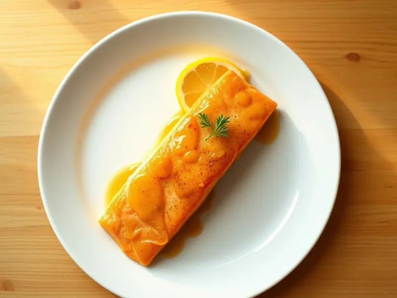

Фото: Иллюстрация ИИ, Cloudflare Workers AI
Лосось в медово-горчичном соусе в духовке
Филе лосося под глазурью из мёда, горчицы и чеснока
25 мин3 порц.419 ккал на порциюБ 35 · Ж 26 · У 7Европейская кухня
Открыть в приложении: порции, таймеры, список покупок
Продукты на 3 порц.
- Сёмга / лосось500 г
- Мёд1 ст. л.
- Горчица1 ст. л.
- Соевый соус1 ст. л.
- Чеснок1 зуб.
- Оливковое масло2 ч. л.
- Лимон по желаниюпо вкусу
- Перец чёрный молотый2 щеп.
Как готовить
- Разогрейте духовку до 200 °C (сильный жар), застелите противень фольгой и смажьте маслом.
- Смешайте мёд, горчицу, соевый соус и рубленый чеснок.
- Выложите филе лосося кожей вниз, поперчите и щедро смажьте глазурью.
- Запекайте при 200 °C (сильный жар) 12-15 минут, пока рыба не станет непрозрачной и не начнёт легко расслаиваться вилкой.
- Сбрызните лимонным соком перед подачей.
Совет. Соевый соус и горчица солёные, поэтому рыбу дополнительно не солите.